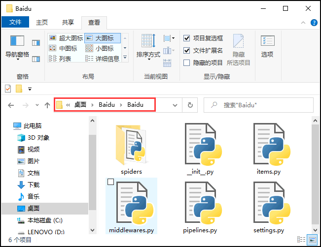

Python Scrapy爬虫框架详解
Scrapy 是一个基于 Twisted 实现的异步处理爬虫框架，该框架使用纯 Python 语言编写。Scrapy 框架应用广泛，常用于数据采集、网络监测，以及自动化测试等。
验证安装，如下所示：
接下来，创建一个爬虫文件，如下所示：
在整个执行过程中，还涉及到两个 middlewares 中间件，分别是下载器中间件（Downloader Middlewares）和蜘蛛中间件（Spider Middlewares），它们分别承担着不同的作用：
Scrapy 工作流程示意图如下所示：

图1：工作流程示意图
上述示意图描述如下，当一个爬虫项目启动后，Scrapy 框架会进行以下工作：
上述过程会一直循环，直到没有要爬取的 URL 为止，也就是 URL 队列为空时才会停止。
提示：Twisted 是一个基于事件驱动的网络引擎框架，同样采用 Python 实现。
Scrapy下载安装
Scrapy 支持常见的主流平台，比如 Linux、Mac、Windows 等，因此你可以很方便的安装它。本节以 Windows 系统为例，在 CMD 命令行执行以下命令：python -m pip install Scrapy由于 Scrapy 需要许多依赖项，因此安装时间较长，大家请耐心等待，关于其他平台的安装方法，可参考官方文档《Scrapy安装指南》。
验证安装，如下所示：
C:\Users\Administrator>python Python 3.7.4 (tags/v3.7.4:e09359112e, Jul 8 2019, 19:29:22) [MSC v.1916 32 bit (Intel)] on win32 Type "help", "copyright", "credits" or "license" for more information. >>> import scrapy >>> exit()如果可以正常执行
exit()操作，并且没有出现 ERROR 错误，则说明安装成功。
创建Scrapy爬虫项目
Scrapy 框架提供了一些常用的命令用来创建项目、查看配置信息，以及运行爬虫程序。常用指令如下所示：| 命令 | 格式 | 说明 |
|---|---|---|
| startproject | scrapy startproject <项目名> | 创建一个新项目。 |
| genspider | scrapy genspider <爬虫文件名> <域名> | 新建爬虫文件。 |
| runspider | scrapy runspider <爬虫文件> | 运行一个爬虫文件，不需要创建项目。 |
| crawl | scrapy crawl <spidername> | 运行一个爬虫项目，必须要创建项目。 |
| list | scrapy list | 列出项目中所有爬虫文件。 |
| view | scrapy view <url地址> | 从浏览器中打开 url 地址。 |
| shell | csrapy shell <url地址> | 命令行交互模式。 |
| settings | scrapy settings | 查看当前项目的配置信息。 |
1) 创建第一个Scrapy爬虫项目
下面创建名为 Baidu 的爬虫项目，打开 CMD 命令提示符进行如下操作：C:\Users\Administrator>cd Desktop C:\Users\Administrator\Desktop>scrapy startproject Baidu New Scrapy project 'Baidu', using template directory 'd:\python\python37\lib\site-packages\scrapy\templates\project', created in: C:\Users\Administrator\Desktop\Baidu # 提示后续命令操作 You can start your first spider with: cd Baidu scrapy genspider example example.com打开新建的项目“Baidu”会有以下项目文件，如图所示：

图1：项目文件
图1：项目文件
接下来，创建一个爬虫文件，如下所示：
C:\Users\Administrator\Desktop>cd Baidu C:\Users\Administrator\Desktop\Baidu>scrapy genspider baidu www.baidu.com Created spider 'baidu' using template 'basic' in module: Baidu.spiders.baidu下面呈现了项目的目录树结构，以及各个文件的作用：
Baidu # 项目文件夹 ├── Baidu # 用来装载项目文件的目录 │ ├── items.py # 定义要抓取的数据结构 │ ├── middlewares.py # 中间件，用来设置一些处理规则 │ ├── pipelines.py # 管道文件，处理抓取的数据 │ ├── settings.py # 全局配置文件 │ └── spiders # 用来装载爬虫文件的目录 │ ├── baidu.py # 具体的爬虫程序 └── scrapy.cfg # 项目基本配置文件从上述目录结构可以看出，Scrapy 将整个爬虫程序分成了不同的模块，让每个模块负责处理不同的工作，而且模块之间紧密联系。因此，您只需要在相应的模块编写相应的代码，就可以轻松的实现一个爬虫程序。
Scrapy爬虫工作流程
Scrapy 框架由五大组件构成，如下所示：| 名称 | 作用说明 |
|---|---|
| Engine(引擎) | 整个 Scrapy 框架的核心，主要负责数据和信号在不同模块间传递。 |
| Scheduler(调度器) | 用来维护引擎发送过来的 request 请求队列。 |
| Downloader(下载器) | 接收引擎发送过来的 request 请求，并生成请求的响应对象，将响应结果返回给引擎。 |
| Spider(爬虫程序) | 处理引擎发送过来的 response， 主要用来解析、提取数据和获取需要跟进的二级URL，然后将这些数据交回给引擎。 |
| Pipeline(项目管道) | 用实现数据存储，对引擎发送过来的数据进一步处理，比如存 MySQL 数据库等。 |
在整个执行过程中，还涉及到两个 middlewares 中间件，分别是下载器中间件（Downloader Middlewares）和蜘蛛中间件（Spider Middlewares），它们分别承担着不同的作用：
- 下载器中间件，位于引擎和下载器之间，主要用来包装 request 请求头，比如 UersAgent、Cookies 和代理 IP 等
- 蜘蛛中间件，位于引擎与爬虫文件之间，它主要用来修改响应对象的属性。
Scrapy 工作流程示意图如下所示：
图1：工作流程示意图
上述示意图描述如下，当一个爬虫项目启动后，Scrapy 框架会进行以下工作：
- 第一步：由“引擎”向爬虫文件索要第一个待爬取的 URL，并将其交给调度器加入 URL 队列当中（对应图中1/2步骤）。
- 第二步：调度器处理完请求后， 将第一个 URL 出队列返回给引擎；引擎经由下载器中间件将该 URL 交给下载器去下载 response 对象（对应3/4步骤）。
- 第三步：下载器得到响应对象后，将响应结果交给引擎，引擎收到后，经由蜘蛛中间件将响应结果交给爬虫文件（对应5/6步骤）。
- 第四步：爬虫文件对响应结果进行处理、分析，并提取出所需要的数据。
- 第五步：最后，提取的数据会交给管道文件去存数据库，同时将需要继续跟进的二级页面 URL 交给调度器去入队列（对应7/8/9步骤）。
上述过程会一直循环，直到没有要爬取的 URL 为止，也就是 URL 队列为空时才会停止。
settings配置文件
在使用 Scrapy 框架时，还需要对配置文件进行稍微改动。下面使用 Pycharm 打开刚刚创建的“Baidu”项目，对配置文件进行如下修改：# 1、定义User-Agent USER_AGENT = 'Mozilla/4.0 (compatible; MSIE 7.0; Windows NT 6.0)' # 2、是否遵循robots协议，一般设置为False ROBOTSTXT_OBEY = False # 3、最大并发量，默认为16 CONCURRENT_REQUESTS = 32 # 4、下载延迟时间 DOWNLOAD_DELAY = 1其余常用配置项介绍：
# 设置日志级别，DEBUG < INFO < WARNING < ERROR < CRITICAL
LOG_LEVEL = ' '
# 将日志信息保存日志文件中，而不在终端输出
LOG_FILE = ''
# 设置导出数据的编码格式(主要针对于json文件)
FEED_EXPORT_ENCODING = ''
# 非结构化数据的存储路径
IMAGES_STORE = '路径'
# 请求头，此处可以添加User-Agent、cookies、referer等
DEFAULT_REQUEST_HEADERS={
'Accept': 'text/html,application/xhtml+xml,application/xml;q=0.9,*/*;q=0.8',
'Accept-Language': 'en',
}
# 项目管道，300 代表激活的优先级 越小越优先，取值1到1000
ITEM_PIPELINES={
'Baidu.pipelines.BaiduPipeline':300
}
# 添加下载器中间件
DOWNLOADER_MIDDLEWARES = {}
想要了解更多关于 Scrapy 框架的知识，可参考官方文档：https://docs.scrapy.org/en/latest/index.html关注公众号「站长严长生」，在手机上阅读所有教程，随时随地都能学习。内含一款搜索神器，免费下载全网书籍和视频。

微信扫码关注公众号